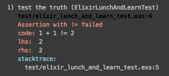

defmodule ElixirLunchAndLearnTest do
use ExUnit.Case
test "the truth" do
assert 1 + 1 != 2
end
end
Capture Code

Compile Data into Code
defmodule MimeTypes do
HTTPotion.start
HTTPotion.Response[body: body] = HTTPotion.get(
"http://svn.apache.org/repos/asf/httpd/httpd/trunk/docs/conf/mime.types"
)
Enum.each String.split(body, %r/\n/), fn (line) ->
unless line == "" or line =~ %r/^#/ do
[ mimetype | _exts ] = String.split(line)
def is_valid?(unquote(mimetype)), do: true
end
end
def is_valid?(_mimetype), do: false
end
MimeTypes.is_valid?("application/vnd.exn") #=> false
MimeTypes.is_valid?("application/json") #=> true
Protocols
Allow extending functions to support new types
Support for protocol is separate from type definition
Blank.blank?
defprotocol Blank do
@doc "Returns true if data is considered blank/empty"
def blank?(data)
end
# Integers are never blank
defimpl Blank, for: Integer do
def blank?(_), do: false
end
# Just empty list is blank
defimpl Blank, for: List do
def blank?([]), do: true
def blank?(_), do: false
end